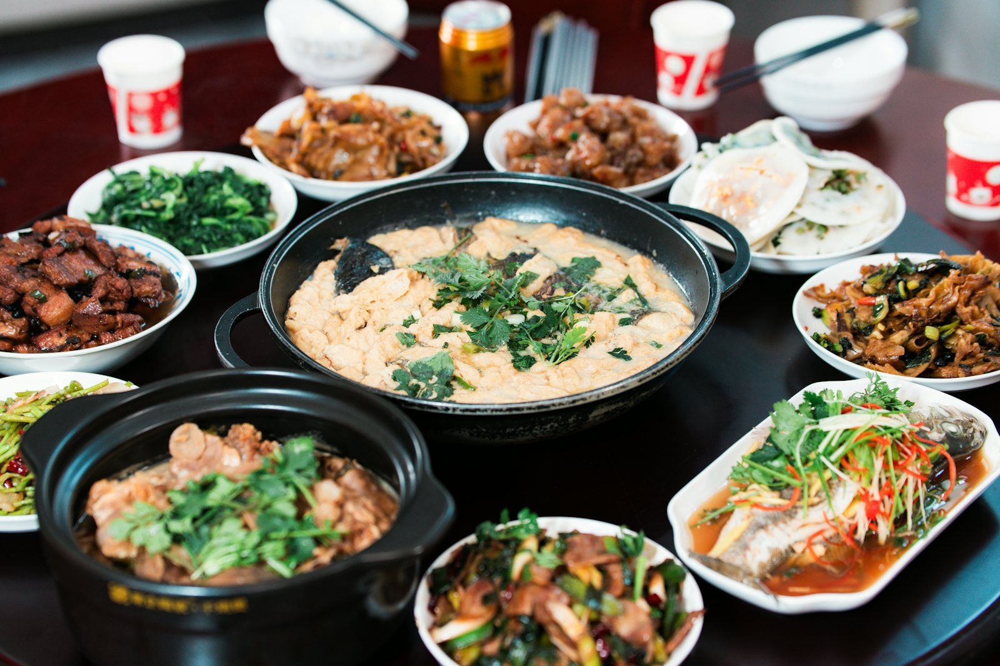
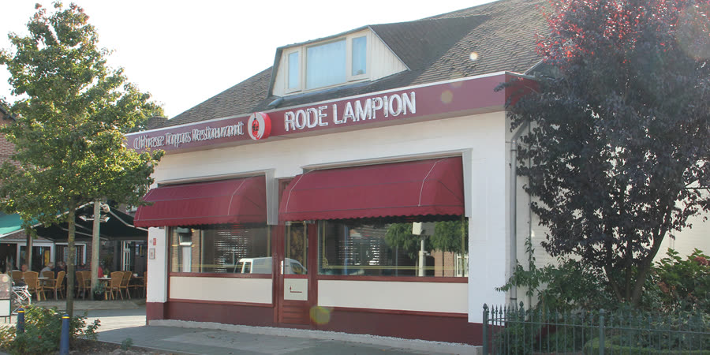
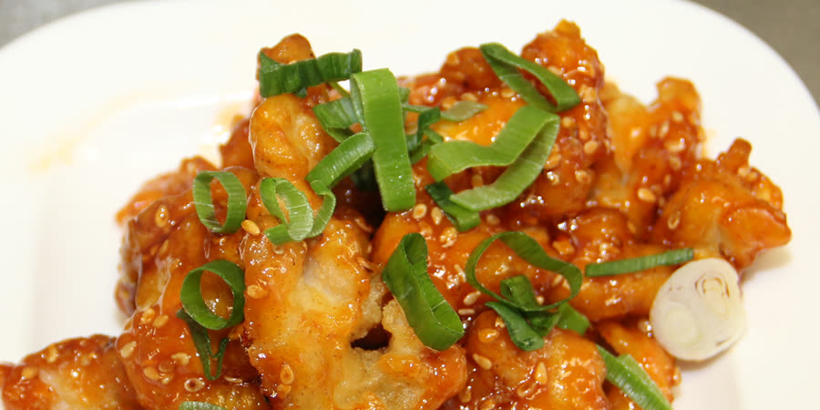

1
Menu A voor 1 persoon
Babi pangang, foe yong hai, mini loempia's en saté
€ 14,00
Chinees tapas restaurant in Boekel
Maak kennis met Oosterse smaken. Voor een vaste prijs proeft u op uw gemak onbeperkt van al onze kleine gerechtjes.
De Rode Lampion is een gezellig, stijlvol en trendy restaurant. Voor een vaste prijs kunt u op uw gemak onbeperkt proeven en genieten uit ons aanbod van kleine gerechtjes, als het ware in echte Chinese tapas-stijl.
Iets nieuws uitproberen en onbeperkt genieten: een aangename gelegenheid voor een geslaagde avond. Liever thuis eten? Ons hele afhaalmenu staat hieronder, met de nummers van onze afhaalkaart.
De kaart bestaat uit allemaal kleine gerechten, zodat u van veel verschillende smaken kunt genieten. Inclusief ijs, koffie en thee.
Dinsdag t/m donderdag
€32,50
Volwassenen
Kinderen 4 t/m 12 jaar € 29,50
Vrijdag t/m zondag
€37,50
Volwassenen
Kinderen 4 t/m 12 jaar € 29,95
Verspilling wordt niet gewaardeerd: restanten als gevolg van overbestelling kunnen in rekening worden gebracht.

Nieuw, ieder weekend
Een warm doorlopend buffet met voorgerechten, soepen, hoofdgerechten en fruit & ijs. Het buffet is voor iedereen toegankelijk en trekt ieder weekend veel gasten, dus reserveer op tijd.
Van maandag tot en met donderdag een lopend buffet? Dat kan voor groepen vanaf 15 personen. Vraag gerust naar de mogelijkheden.
Reserveer: 0492 - 329998Bestel telefonisch op 0492 - 329998 en noem het nummer van het gerecht. Bij alle hoofdgerechten krijgt u nasi, bami of rijst naar keuze; mihoen of Chinese bami is € 3,50 extra.
Heeft u een allergie? Meld het ons.
180
Kip- of tomatensoep, babi pangang, groenteschotel, koe lu yuk, kip in zoete chilisaus, saté, atjar en kroepoek
€ 40,10
181
Ajam pangang, stoofrundvlees in ketjapsaus, foe yong hai, taugé in satésaus, droog roergebakken kip met kerriekruiden, saté, atjar, gebakken banaan en kroepoek
€ 36,80
182
Tomatensoep en Peking soep, cha sieuw, kip in zoete chilisaus, grote garnalen in knoflooksaus, runderhaas in zwarte bonensaus, saté speciaal in ketjapsaus, mini loempia's, kroepoek en een fles huiswijn
€ 87,00
Thuis lekker en geheel verzorgd Aziatisch eten? Dat regelen wij voor u. Heeft u een verjaardag, receptie, opening of zomaar iets te vieren, of wilt u gewoon een lekker hapje bij de borrel? Wij brengen de Aziatische smaaksensatie met plezier bij u thuis.
Voor groepen vanaf 15 personen. Bel ons vrijblijvend voor meer informatie.
Bel 0492 - 329998

Afhalen: maandag t/m donderdag 16.00 – 21.00, vrijdag t/m zondag en feestdagen 12.00 – 21.00.
Rode Lampion